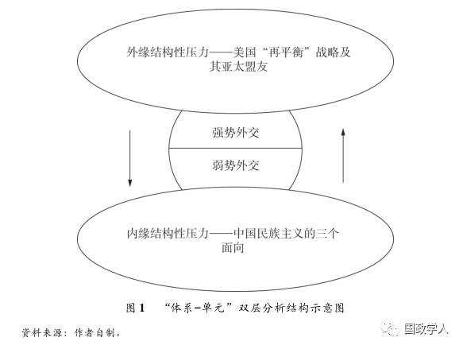
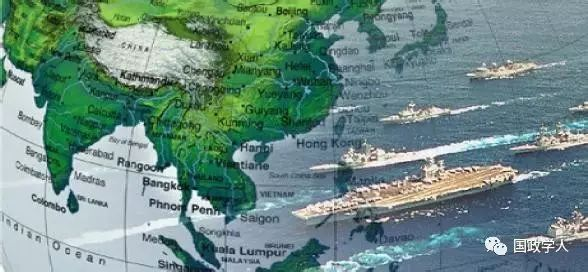

收录于合集
中国外交转型的困境:“体系-单元”的双层结构解析

作者简介：
叶晓迪，台湾大学政治系博士候选人
杨佳龙，澳门大学政府与行政学系博士研究生
内容提要
2016年初的“吴胡之争”再次点燃关于“中国外交转型方向”的争论。导致争论的原因不仅在于学界与政界对“转型方向”无法达成有效的共识，更是在中国外交的转型中所遇到挑战与困境。然而，西方传统的国际关系理论与近几年兴起的“本土化”理论虽然有助于解释中国外交转型的问题，但都过分注重“体系层次”的因素，从而忽略“单元层次”的原因。因此，本文试图以“体系－单元”的双层结构解析中国外交转型中所遭遇的困境，并尝试提出“选择性强硬”外交战略可能是突破转型困境的有效方式。
关键词： 中国外交 转型困境 结构性压力 海权争议 选择性强硬
2016年初，前驻法国大使吴建民先生在外交学院的一次演讲在各大网络及社交媒体圈中引发轩然大波。具体而言，吴建民在演讲中批评《环球时报》经常刊发“极端性的文章”，并且指明胡锡进虽为《环球时报》主编，却无法把握世界的大势;时隔几日，胡锡进则以“吴建民是典型的鸽派”作为回应。两位知名人士之间的“一呼一应”最后演化为“吴胡之争”。“吴胡之争”除了涉及两位先生对待中国外交行为所持的立场不同之外，还涉及一系列关于中国外交的辩证问题，亦即:当代中国需要怎么样的外交?原有的外交战略是否仍旧适用?中国的外交战略是否需要转型?
事实上，关于中国外交是否需要转型并非是一个方兴未艾的争辩。上世纪八十年代末的“北京政治风波”后，以邓小平为首的中国第二代领导人为了应对国内社会动荡、国际孤立及东欧剧变的多重压力，提出“韬光养晦”的外交战略。然而，进入21世纪后，随着中国实力与国际影响力的增大，国内对“韬光养晦”外交战略的质疑逐渐显现。国内陆续有学者表示“韬光养晦”的战略是邓小平在20世纪90年代初提出的战略思想，并不适用于21世纪中国所面临的国际形势。虽然在该轮辩论中，支持“韬光养晦”外交战略仍占主流，但是在2008年北京奥运后到习近平主席第一任期间，是否应放弃“韬光养晦”外交战略的争论再次升温。伴随争论而来的不仅是中国国力的崛起，还有国际权力格局变动的压力与日趋复杂化的周边安全环境，这使得中国的外交行为在21世纪的第一个十年后发生明显的转变。这种转变受到欧美学者的高度关注，他们形成“中国的外交正在转变为强硬的姿态”的共识，并逐步将此共识总结为“中国强硬论”，目的在提醒国际社会中的其他行为者关注中国参与国际事务的行为模式是否有意挑战现有的国际秩序，改变当前亚太地区的权力格局，进而打破国家间权力平衡。承述上文所提之问题，本文进一步提出:中国外交战略姿态的转变是引起亚太区域纷争的主要因素还是解决争端的关键方案?中国在自身的外交转型的过程中将会面临哪些困境?这些困境应如何解决?
在中国为首的新兴大国的不断崛起与欧美传统强国逐步衰弱的时代背景下，中国的外交也随之步入“后邓小平”时代的战略转型期。体系理论强调国际权力结构一旦形成，就会对内部组成单元形成制约与压力，形塑单元体(国家)在国际社会中的行为模式。换言之，中国的外交转型的诱因之一恰恰是来自于当前国际权力格局的变动;同时，作为国际体系中的关键行为体，中国的外交转型也对当前的权力格局的重组造成巨大影响。因此， 本文认为“国际体系－中国”二元互动的能动关系既是推动中国外交转型的动因，也是造成转型困境的主要因素;进一步而言，本文还认为由于“体系－单元”这一双重结构性压力的存在使中国的外交转型陷入困境。
本文的章节组成一共分为四个部分。第一部分试图简要地对外交转型进行理论性的界定，检视现有国际关系理论对中国外交转型分析的适用性以及批判性地回顾近期对“中国外交转型”议题的相关文献，找出现有文献的争论焦点与潜在的研究盲区，并提出适合分析中国外交转型困境的“体系－单元”双层分析结构;第二部分以四海联动中的黄海与台海为案例研究，探析当下中国外交转型是如何受到“体系层次”的外缘结构性压力而陷入困境;第三部分则将探析的重点转向单元层次的内缘“结构性压力”;在最后一个部分中，本文提出以“选择性强硬”的战略思维突破现有的困境。
> »>
一、外交转型的定义与现有文献的争论
(一)外交转型的定义
在回顾与讨论现有关于中国外交转型的文献研究之前，我们必须先回答一个最基本的问题:何为外交转型?关于外交转型的定义可以简要地拆分为两个部分:首先，根据《汉语词典》的释义，所谓转型是指事物的结构形态、运转模型和人们观念的根本性转变过程。其次，学界对外交的定义为:“以主权国家为主体，通过正式的代表国家的机构与人员的官方行为，使用交涉、谈判和其他和平方式对外行使主权，以处理国家关系和参与国际事务，是一国维护本国利益及实施对外政策的重要手段。”基于上述两个概念的基本定义，本文将外交转型定义为:中国对外行为的工具与战略调整过程。
(二)现有国际关系理论的解释与国内外的争辩
对中国外交转型的理论解释主要源于现有两大主流范式，亦即:现实主义与自由主义，而这两大范式也对崛起后的中国外交行为的预测持有“悲观”与“乐观”两大态度。首先，“悲观”的预言主要源自于“霸权转移论”与“攻势现实主义”。以奥根斯基为代表的“霸权转移论者”认为，崛起中的大国凭借其积累的实力，会对现有的国际秩序不满，为“不满意国家”;而现有秩序的既得利益者的主导国为“满意国家”。当“不满意国家”认为有机会通过战争赢得国际秩序的主导权的“临界点”时，他们就会发动战争改变现状。攻势现实主义者对中国对外行为模式的预测则更为悲观，他们认为中国将会寻求区域霸权，将美国的利益赶出亚太区域，改变现有的区域与国际秩序，最后造就大国之间安全竞争不断升级的悲剧。相较之下，以基欧汉为代表的新制度主义者则对崛起后中国的外交行为表示“乐观”，并强调中国加入现有的国际制度，表现其合作的态度，因而能够为国际社会的总体收益带来新的活力。
除了主流国际关系理论对中国外交转型的解释之外，关于转型的辩论还在国内的学界出现。若以流派加以区分，国内的辩论可以主要分为:韬光派与奋发派。韬光派的理论大前提是中国外交战略仍需继续坚持“韬光养晦”思维，并且转型的过程不应一步到位。为了检证此大前提，秦亚青教授将中国传统文化知识中的“中庸之道”引入对外交战略转型的讨论中。他认为，依据中国传统文化中的辩证思维方式，当代中国外交的转型应当遵循“延续中改变”的原则，渐进式地进行，而非采用“强烈反转”的方式。王辑思也在辩论中强调“韬光养晦”战略思维的现实意义。他认为中国在实力定位、地缘政治定位、国家政体属性以及国际角色定位四个方面与欧美的强国仍存在一定的差距，因而“韬光养晦”战略仍具重要的现实意义。相反地，奋发派的理论大前提则是中国在面对“崛起困境”的过程中，应该采取“奋发有为”的战略思维来争取更有利的外部环境。阎学通教授以其独创的“道义现实主义”作为论述的理论基础，配合“奋发有为”的外交战略思维，有助于同时提高崛起大国在国际社会中的政治实力与合法性。延续此逻辑，徐进则进一步从外交策略方面提议，中国应该破除对“结盟”的认识误区，积极通过展现大国的“道义”来获取盟友的支持，积累中国在国际社会中的声望与战略信誉。
然而，就分析层次而言，不论是西方理论中的“悲观派”与“乐观派”，还是国内的“奋发派”与“韬光派”，都属于体系层次的分析。肯尼斯·华尔兹则为体系理论的代表。华尔兹认为，国际社会处于一个“无政府状态”，国际体系有外围的边界与内部的构成单元(即国家)，单元之间的力量对比与互动模式构成不同的国际体系形态，而不同的体系形态反过来对这些构成单元的互动模式产生影响，但是，华尔兹所强调的国际体系对于体系内部构成单元的制约力大于单元对体系的影响力，并且在体系形成后，“体系－单元”之间的互动是单向的，这意味着单元(国家)的行为模式无法影响与改变国际体系。换言之，华尔兹的理论排除了“单元层次”这一推动中国外交转型的重要变量。
(三)“体系－单元”双层结构的解析
受制于理论的僵化与忽视单元层次的复杂变量，华尔兹的体系理论对中国外交转型的解释力稍显一般。新古典现实主义为本文提供了一个良好的、可操作的分析框架。有学者认为，过往对某国外交行为的研究在体系层次或国内层次的单一层次中得到系统性的发展，但似乎都忽视了体系层次与国内层次同时互动时所产生的共变效应。换言之，一个具有强有效解释的外交理论应当兼顾体系层次与国内层次的因素。新古典现实主义虽然仍将国际体系视为影响一国外交战略或行为模式的最重要变量，但它还兼顾了一国中的国内层次因素，将其视为中介变量，辅助解释一国的外交战略转型。因此，在针对某一国家外交战略行为的研究中，新古典现实主义将比传统的体系理论更具解释力。基于此，本文希望通过“体系－单元”的双层分析结构，解释中国外交转型过程中陷入困境的原因。如图1所示，“体系－单元”双层分析结构认为，中国如若采取奋发有为的“强势外交姿态”，会受到东亚以美国为首的安全联盟的外缘结构性压力，导致无法实现外交目标;然而，如若继续保持传统的韬光养晦的“弱势外交姿态”，中国则会受到国内层次的内缘结构性压力。

> »>
二、体系层次的结构性压力：以黄海与台海为例
在进入体系层次的结构性压力的案例讨论之前，还有两个概念需要界定，亦即:“奋发有为”外交战略定义与造成外缘结构性压力的因素。首先，阎学通教授对“奋发有为”战略做了比较明确的界定，他认为奋发有为应该包括以下几个要素:第一，要求中国要主动采取措施，引导外部环境有利于中国崛起的方向发展;第二，战略的基本方针要从“不当头”向“敢当担”转变，以“亲诚惠容”的方式在周边国家中建立战略信誉;第三，奋发有为的战略目标是争取更多的朋友为可能盟友。其次，本文中所讨论的体系层次所带来的结构性压力主要来自于东亚区域。一般而言，东亚区域的结构性压力包含着几个主要因素:美国因素、中国因素、日本因素以及朝核因素。也有部分学者将现有的东亚结构性矛盾归结为“中美因素”。而本文以为，现阶段东亚体系层次的结构性压力主要来自于三大因素:一是自2008年以来，国际责任伴随着中国国际影响力上升而到来，要求中国在国际社会的政治、经济和安全领域承担更多责任;二是美国的“重返亚太战略”;三是近年来中国更为复杂的周边环境。这三大因素引起东亚区域的国家(或政治实体)对四大海洋战略的改变，形成具有东亚特点的“四海联动”格局。
(一)案例一：黄海、朝核与美韩共同防御条约
从冷战的两极格局再到2010年的“重返亚太”战略，韩国仍然扮演着美国东亚关键同盟的角色。作为东亚关键的战略支点，韩国是美国保持在东北亚地区军事布局的前沿阵地，一旦朝鲜半岛统一或落入中国的势力范围，必然会极大地改变美国在东亚的战略格局与发挥空间，因此，保持韩国作为盟友对美国而言具有重大的战略价值。对于中韩关系而言，两国之间一直享有“政热经热”的状态。并且，在朴槿惠当选执政后，中韩之间还进入了一段“蜜月期”。然而，影响东亚区域安全的“朝核问题”再度爆发，使得中韩关系再次进入螺旋式下降的轨道，同时，逐渐强化的美韩军事同盟所带来的地缘权力结构变化的压力也使得中国的外交陷入两难的困境。在军事对抗中威慑韩美同盟、提升国家安全感、掌握朝鲜半岛局势的主导权，用以换取美国的安全承诺，是朝鲜拥核的首要外部考量，也是造成东北亚地区安全困境长期存在的主要原因。在外交新转型的时期面对“老旧”的朝核问题，中国的外交策略工具箱却开始显得提襟见肘。
中国在面对朝核问题的理想工具选择则仍是“六方会谈”，这既是和平解决朝核争议的方式，又能够为中国积累战略信誉。然而，国际政治的现实说明通过“六方会谈”实现半岛无核化的可能性极低，那么留给中国促使朝鲜弃核的工具只剩下两种:第一，美韩主动对朝鲜的核武设施采取直接打击或直接推翻金家政权，这也是所谓的“伊拉克萨达姆模式”，但是六十年前朝鲜战争的消耗成为美韩同盟的成本考量;第二，对朝鲜实行最严厉的经济制裁，断绝其与周边各国的国际往来，但是根据以往经验，封锁的压力更可能将朝核问题推向极端。因此，朝核问题成为半岛的僵局，这也导致僵化的半岛情势成为美国“再平衡”战略中的可操作点，进一步扩展其在东北亚区域的利益。
具体而言，新一轮的朝核问题为美国强化其东北亚同盟关系提供绝好的契机。中国正在经历“蜜月期”的韩国对美韩同盟造成较大的离心压力，但美国可借此机会推进部署“萨德”反导弹系统，防止朝鲜核武及轨道导弹投射范围的扩散，并且以对韩国提供核保护为由，加强对盟友的管控。而韩国则在美国的援助下，获得对朝鲜的打击能力与核抗击能力。因此，朝核问题使原本已经产生离心力的美韩同盟关系再次得到强化。并且，由于朝鲜导弹覆盖范围囊括日本本岛，因此日本会积极配合并参与到新强化的美韩同盟之中，从而在中国的东北部形成一个美日韩三角安全体制。东亚区域的两大强国与域外大国组成的安全同盟压制了原本因中国崛起而即将被改变的区域权力格局。
“奋发有为”的外交战略要求中国在参与国际事务时，从“被动回应”转变为“主动发声”，并且以“创造性的手段”介入，获得主动权，但在此轮的朝核问题中，中国却因为目标与实际行动上的矛盾而陷入被动。中国对朝政策有一体三面的目标:无核化、半岛稳定与和平方式，但政治的现实却反映了这三个目标的矛盾性。虽然中国同意完整地执行联合国安理会《第2270号决议》，但是为了维持区域秩序的稳定与中朝关系发展，避免国际制裁的压力导致金家王朝崩解，损害自身利益，在新一轮的朝核问题上，中国仍然坚持以对话协商并保持中朝经贸往来等柔性方式进行，削弱了制裁的力度，使得美韩两国对中国的处理方式失去耐心，变相加强了美韩联盟的关系，同时也无法达成中国在周边国家中建立战略信誉的目标。新的外交战略应当搭配新的或创造性的外交手段，“柔性方式”不仅反映中国外交转型过程中目标与手段不相匹配的阵痛，还使得中国在朝鲜半岛的问题上陷入两难的境地。现阶段的政治现实是，若中国继续坚持以和平方式实现朝鲜半岛无核化，必然要反对美韩同盟所采取的军事部署行动;若中国希望维持中朝友好关系而放弃实现无核化，那东北亚区域将形成“中朝联盟”与“美日韩联盟”的战略对抗性同盟，进而演变成东北亚的小冷战格局。从中可看出，东北亚区域因美国重返亚太战略与朝核问题所构筑的安全同盟在体系层次上为中国外交转型带来结构性的压力，有可能使中国的外交陷入长久的战略泥潭之中。
(二)案例二：台海、《与台湾关系法》及台湾“大选”
在台湾海峡，中国大陆、台湾地区、及美国一直存在着一个复杂的“三角”关系。2008年马英九当选台湾地区领导人后，强调两岸关系高于台湾“外交”的原则，采取“外交休兵”、“亲美、友日、和中”的“外交政策”。但实际作为上，马英九的“和中”是大于“亲美”，以致最后演变为“亲中、友美、和日”的实际关系。因此，在缺少台湾这一强力的东亚战略支点的情势下，美国的“重返亚太战略”显得后劲不足。然而，2014年恰逢美国与台湾之间的“与台湾关系法”35周年，因而美方利用周年纪念日之效应再度强调台湾在美国“亚太再平衡”战略中的所扮演的重要角色与战略地位，是美国在东亚地区发挥影响力的“倍增器”。美国的举动使得原本相对稳定和平的两岸关系却因为台湾战略角色的变化再次产生未知的因素，两岸长久积累的历史问题与政治争议成为美方又一个“可操作点”。
美国对台海的操作性具体表现在台湾战略角色的变化。首先，台湾成为中美关系松紧程度的“安全阀”。换言之，在中美关系这一对现存的最复杂的大国双边关系中，台湾“安全阀”的功能有效地控制双边关系的升降程度，一直保持在一种“斗而不战，斗而不乱”的状态。例如，当“习马会”取得两岸历史性突破之时，美国适时地为台湾提供18.31亿美元的军售案，维持“美中台”三者间的微妙平衡。其次，台湾是美国亚太区域的“准盟友”，也是美日安保条约之下的“准会员”，享有无名之实。具体表现为，台军每年的“汉光演习”，都会有美方军官参与;同时，美方也为台军打造联合指挥管理系统，预留了与美军太平洋司令部合作的接口。
从外交政策而言，中国反复强调会保持考虑周边国家的利益，并且保证绝不先使用武力。这使中国在台海博弈中先验性地处于被动状态。习近平主席以来的对台政策除了维持两岸经贸整合与互惠互利等传统性政策以外，还希望通过两岸共同的文化与血缘基础构建“命运共同体”，形成两岸“同宗同源”的身份认同感，挽救因为两岸制度、历史及情感层面而造成的台湾人民“认同漂移”现象。并且，“习马会”可以被视为北京方面主动拉近台海距离的善意之举。然而，中央政府试图“突破台海”的举止却由于台湾“安全阀”功能存在的关系，美国轻易地通过“对台军售案”就平衡了三者之间的关系，再次通过台湾将中美关系维持在符合美国的利益的一侧。
此外，中国外交困境在具有“台独”倾向的蔡英文上台后变得更为明显。基于李登辉与陈水扁的经验，“台独”属于分裂势力，触犯中国核心利益的底线，因此，中国对台是不可妥协与让步的强硬态度，甚至会采取相应的打击手段。但是，强硬的打压对台效果并不明显，还可能将台湾进一步推向美国的亚太联盟，加强与美国、日本及南海国家的关系。蔡英文上台后的“亲日”与“新南向政策”便是具体表现。向北，台湾希望能加强日本与“美日安保”的联系;向南，台湾除了试图摆脱两岸经贸的不对等互赖关系以外，更希望能够在“美菲”南海联盟中获得多一层保障。这将使得台湾在中美台“战略三角”中的地位提高至“枢纽”而非“侧翼”的位置。由于两岸存在的“零和游戏”关系，当台湾获得灵活性较高的“枢纽”地位之时，便会导致大陆对台政策的变化空间遭到压缩。并且，中央政府持续性的打压，不仅无法有效地积累中国的战略信誉，亦无法在东亚区域获得更多“伙伴”的支持，更有可能导致“美日韩菲+台湾”的集体安全联盟的形成。

> »>
三、单元层次的结构性压力：民族主义的三个面向
中国的经济发展同时伴随着民族主义的崛起，1978年改革开放以来，中国经济上的发展与复苏伴随着国民对于国家形象和实力上升方面的要求。随着“中国梦”政策的推行，中国政府在向世界推广中国对外来世界展望蓝图的同时，也让国民对于中国在国际舞台的表现及国内美好生活充满着期待。关于“中国民族主义”讨论的文章不胜枚举，但是，已有的研究更多地聚焦于“普罗大众”的民族主义是如何对中央政府的政策造成影响。事实上，民族主义的需求不仅存在于“大众”间，还存在于其他面向，亦即至少可将民族主义的分析分为三个面向:顶层、中层以及底层。依此三个面向，更能够描述中国外交转型时期所受到的内缘结构性压力。
首先，顶层民族主义方面。习近平主席展现出更高的主动性与自信心。这主要表现在外交方面。“习时代”更强调国家的尊严，赋予中国梦“富国强兵”的意涵，显现更多质疑现有国际秩序的话语。为了配合“主动与自信”的姿态，习近平主席先在2013年11月12日改组了中央国家安全委员，进而为了应对美国“重返亚太”战略布局，在同月23日宣布设立“东海防空识别区”。在国际经济制度方面，中国主导的“金砖开放银行”、“亚洲投资银行”开始登上国际舞台，长久以往，将会对美国战后建立的国际货币体系，甚至整个国际经济秩序造成挑战;在地缘政治方面，横跨欧亚大陆的“一带一路”战略设计、中美洲的“尼加拉瓜”大运河与泰国的克拉大运河计划，被理解为中国在21世纪希望建立的势力范围，更有评论将“一带一路”称之为“中国版马歇尔计划”;在区域安全合作方面，中国主导的“亚洲安全观”亦被学者视为亚洲版本的“门罗主义”。简言之，在顶层民族主义的推动下，传统的“韬光养晦”外交战略思维已经无法满足“习时代”对“大国尊严”的需求，因此，在2013年的《周边外交工作座谈会》上，习近平提出“奋发有为”的外交战略思维，一改过去的外交作风。
其次，在中层民族主义方面，“中国国际关系学者”更符合本文的讨论范围。在上述的顶层民族主义中，习近平时代的中国对“现有国际秩序”的不满凸显。因此，新的外交战略姿态需有新的理论支持，而“道义现实主义”的崛起迎合了此需求。该理论的代表人物，阎学通教授认为，中国若想在中美竞合的国际大环境中取得“双赢”的预期，唯一的办法就是制定国际社会普遍接受的制度与规范，并用集体力量约束各国遵守。对于力量使用的强调与重制国际社会制度的观点与“顶层民族主义”不满现有国际秩序的需求相符，有力地支持习近平时代的外交战略理念。同时，在面对现有霸权的同时，阎学通进一步思考“中国打败美国”的方式，认为中美竞合的关键在于谁拥有更多高质量的盟友，这取决于中国能否为世界其他国家提供比美国更高的道义水平。关于盟友的论述以及道义水平惠及世界各国的论述与上述“顶层民族主义”所驱动的战略设计相符。换言之，阎学通为代表的国际关系学者为中国新时期大战略的顶层设计提供理论基础。“中层民族主义”所创造的中国特色式的理论为“顶层民族主义”采取“强势外交”的战略姿态提供理论支持。
最后，在底层民族主义方面，在近年来中国外交的争端与冲突事件中，中国民众对外国势力侵扰我国权益表现出愈益明显的不满态度及倾向。并且，这种不满随着社交网络的快速发展而有“扩大化”的迹象。例如，在钓鱼岛“国有化”事件中，“微博动员模式”对推进民族主义运动有着不可忽视的作用，加剧国内大规模的反日、抗日游行的情势。在中国外交部发言人的言行和态度上，中国网民也对外交部在某些国际争端的态度上的“不作为”表达出明显不满的态度，并通过给外交部直属机构“寄钙片”继而希望中国外交上的表现可以“硬气些”。因此，当中国外交想采取“韬光养晦”的战略之时，在很大程度上受到国内爱国民族主义带来的压力，从而迫使中国在对外姿态展现其强硬的姿态，以回应民意。因此，中国政府的外交转型显然受到了来自中国国民对于中国在国际上高度期望的压力。
> »>
四、结论：“选择性强硬”战略思维作为突破?
基于“体系－单元”双层分析结构的探析，中国外交转型的困境主要受到体系层次与单元层次的双重结构性压力而产生。简言之，如图1所示，当中国外交向“奋发有为”的战略转型时，其受到单元层次中，国内高涨爱国民族主义的压力就会减少，但在体系层次上则会受到以美国为首的亚太安全同盟的结构性压力。反言之，中国若采取“韬光养晦”的战略姿态，虽在体系层次压力减小，但却无法响应单元层次内部的压力。并且，在美国“四海联动”的战略框架之下，中国外交只需与其中之一联盟形成不和之势，便会形成“牵一发而动全身”的蝴蝶效应。例如，中国因对朝核目标与行为之间存在的矛盾性，导致美韩安全联盟强化，而因朝核的区域覆盖问题以及中日在东海的紧张关系，间接推动日本在美韩同盟之间的积极作为，隐约形成“美日韩”同盟的东北亚格局。
在国际体系层次与单元层次的双重结构性压力下，当下中国外交转型可能面临的挑战或许会多于其所面临的机遇。在外交转型“徘徊期”的背景下，是否存在着“第三条道路”，用以同时应对体系－单元层次的压力?本文认为，“选择性强硬”的外交战略能够在现阶段发挥作用。“选择性强硬”战略的基本要义在于:虽然中国在崛起的过程中，仍然会坚定维护国家核心利益;但并不会一昧采用“强硬的”和“不可妥协的”外交姿态，而是在面对不同“类型”的国家时，混合使用强硬或妥协的战略姿态。换言之，“选择性强硬”更像是“奋发有为”与“韬光养晦”的折中之路。
具体而言，“选择性强硬”战略判定的关键指标至少有二:一是以核心利益作为战略底线;二是以是否“美国亚太盟友”作为国家“类型”的判准。前者为后者的前提与基础。2011年，中央政府所发布的《中国的和平发展》白皮书从官方的层面定义了中国“核心利益”的内涵。核心利益的官方定义进一步划清中国外交的底线。换言之，在利益底线之上，中国的外交策略将更具灵活性。例如，在面对与日本在钓鱼岛的争端问题上，为了同时应对体系结构的压力与国内民族主义的双重压力，中国的外交政策可以表现“强硬的姿态”，捍卫自身的利益底线。保持中日之间可控式的紧张关系一方面表明中国外交不畏对抗的强烈意愿，另一方面能够有效地响应国内的民族主义。而在面对与东盟国家竞争时，则可以适当地表示妥协。在中越南海“981钻井”的争端中，北京政府更多采取“安抚”与“合作”的外交姿态，使得中越螺旋式下降的关系止跌回升，很快就实现了中越破冰之旅。
由此可见，建立在“核心利益”底线之上的战略性妥协一方面能够展现中国维护与周边国家关系的善意，表明作为区域秩序的维护者的决心，积累国际信誉;另一方面还能够减轻由四海联动所带来的体系层次的结构性压力，释放中国外交的变化空间。总之，中国的外交转型正处于“徘徊期”，在体系层次与单元层次的双重压力下，转型的过程充满着困境与不确定性。因此，在“摸着石头过河”的探索期，中国的外交必须保持其灵活性与多变性，避免战略思维僵化于“奋发外交”与“韬光外交”的两个极端，才有可能突破现有的外交困境。
编辑：晞哲
您可能还会喜欢：
期刊分享 | 国际关系相关专业所有核心期刊免费获取（最新pdf版）
“国政学人”微信公众平台立足于政治学、国际政治与国际关系等专业领域，系统更新最新核心期刊与经典著作，兼顾社科学术研究方法和论文写作技巧的普及。“我们既生产学术，又做学术的搬运工。”“国政学人”致力于打造广大学人的掌上图书馆与高端学术传播平台，立志为中国国际政治学的传播与发展贡献自己的一份力量。
如果您有佳作或批评建议，请编辑内容发送至guozhengxueren@163.com, 欢迎来信与投稿！请动动手指分享到您身边的学术群、朋友圈，让国政学人惠及更多的朋友，